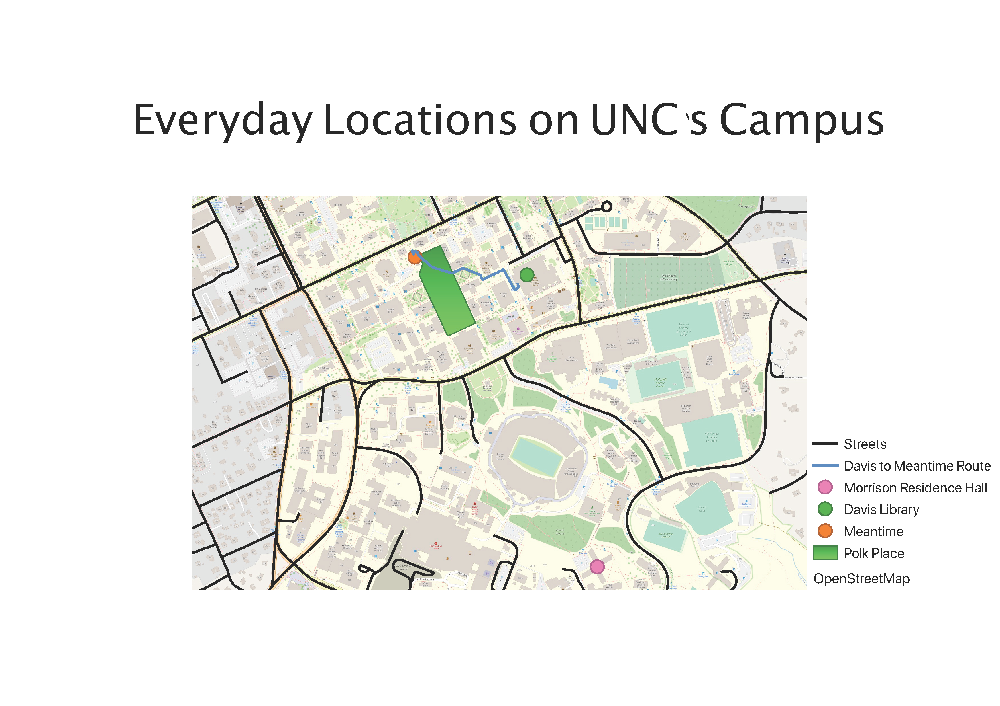

My Everyday Locations at UNC
This map shows some of the places I go everyday.

Data used for this project is from:
Chapel Hill Open Data
Vector Files
Point Layer: Davis Library
Point Layer: Morrison Residence Hall
Point Layer: Meantime Coffee
Polygon Layer: Polk Place Quad
Line Layer: Route from Davis Library to Meantime Coffee